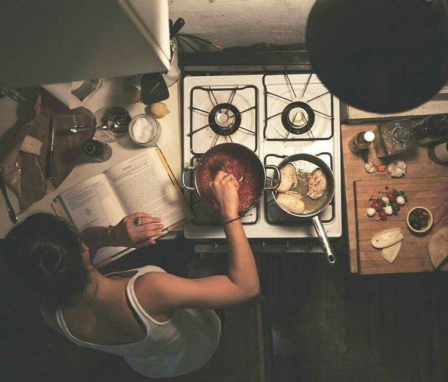

Vítejte na mém prvním webu, psát weby se teprve učím, ale myslím, že mi to docela jde

Jmenuji se Leona Bilková a je mi 29 let. Vystudovala jsem vysokou ekonomickou školu se zaměřením na ekonomika podniku. Aktuálně pracuji jako OSVČ ve společnosti Allianz.
Mým velkým koníčkem je vaření.
Mým dalším koníčkem je cestování, ale vzhledem k mé práci to nejde moc zkloubit dohromady.
Proto bych se chtěla naučit programovat, abych si mohla vytvořit svůj web o vaření a cestování, což doufám, že mě bude jednou živit.
Již mnoho let se věnuji vaření a prodeji.
Hledala jsem alternativu práce online a narazila jsem na itnewokr.cz, kde se nyní účím HTML a Javu, díky čemuž bych chtěla dosáhnout svobodě a zároveň dělat, co mě baví a naplňuje.
Tato stránka je vytvořena podle HTML tutoriálů na itnetwork